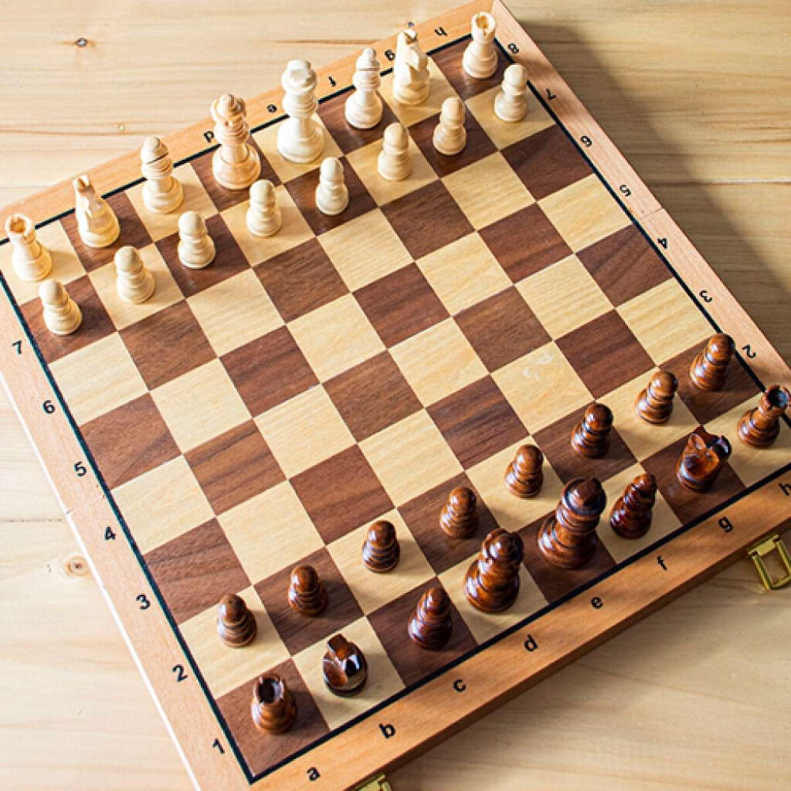
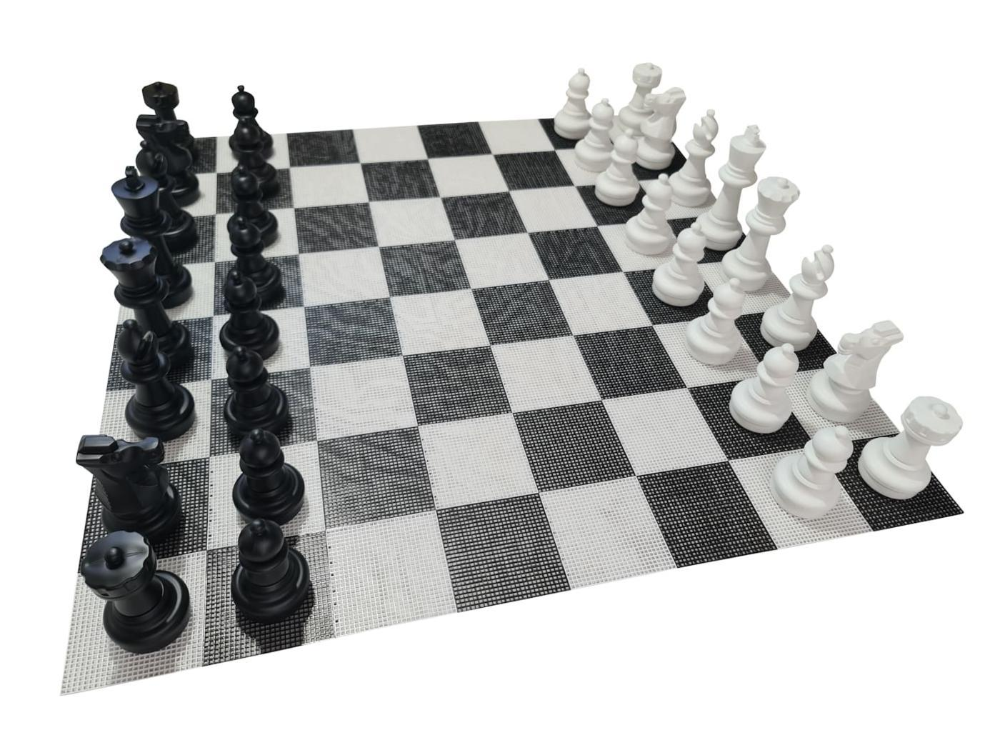
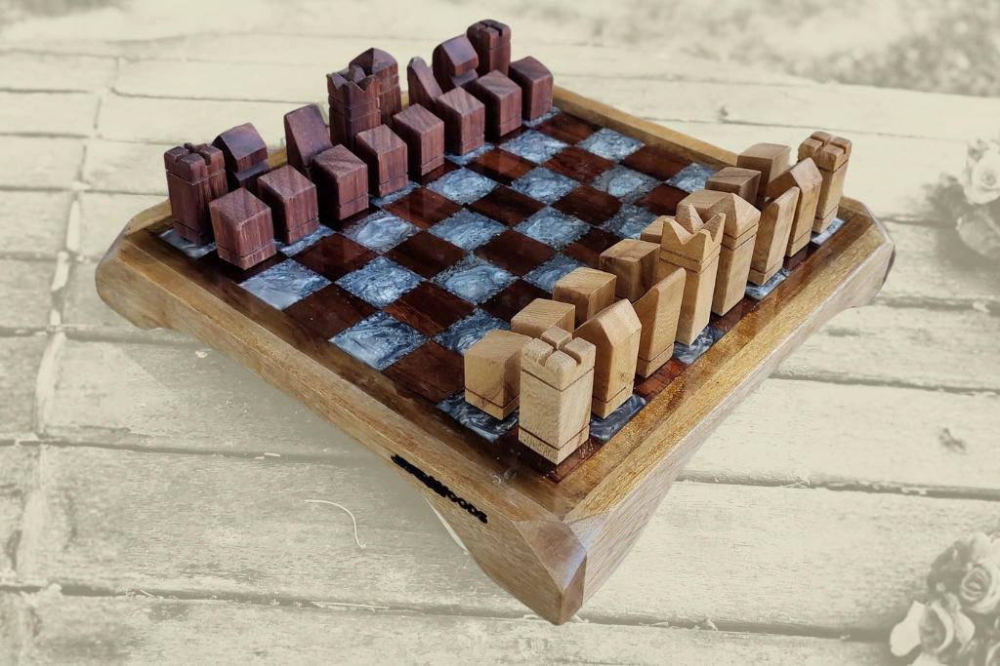
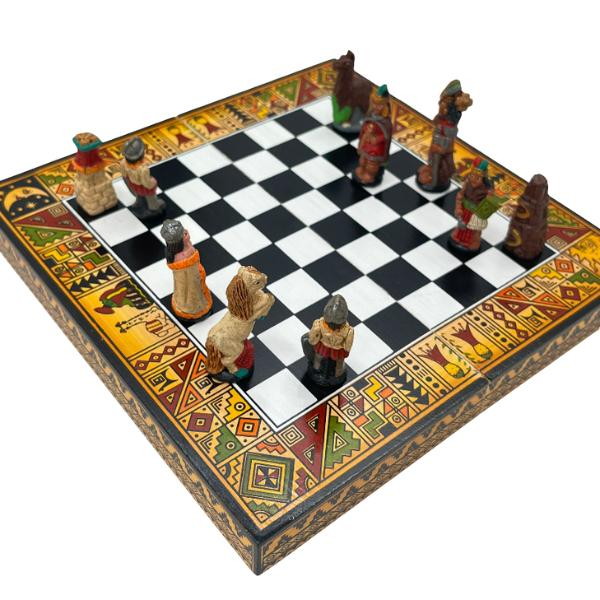

|
 Tablero de madera clásicoElegante, resistente y el más usado en torneos y colecciones. La madera le da una sensación premium y un estilo tradicional que nunca pasa de moda. |

Tablero magnético portátilIdeal para viajes, clases o jugar en movimiento. Las piezas se adhieren al tablero para que no se caigan fácilmente. |

Tablero de vidrioMás decorativo que competitivo. Tiene un diseño moderno y elegante, perfecto para oficinas, salas o regalos exclusivos. |

Tablero temático medievalLas piezas representan caballeros, reyes, guerreros o ejércitos históricos. Muy popular entre coleccionistas y fanáticos de la fantasía. |

1. Tablero de lujo artesanalHechos a mano con maderas finas y acabados detallados. Muchos son piezas de colección y decoración además de juegos funcionales. |
 Tablero giganteUsado en parques, eventos o centros comerciales. Las piezas pueden medir más de medio metro y hacen las partidas muy llamativas. |
 Tablero vertical o modernoDiseños innovadores que ahorran espacio y sirven también como decoración contemporánea |
 Tablero de resinaMuy popular en emprendimientos artesanales porque permite colores personalizados, efectos brillantes y diseños únicos. |